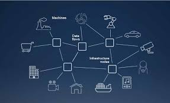

As defined by Gartner, hyper-automation deals with the application of advanced technologies, including artificial intelligence and machine learning, to increasingly automate processes and augment humans. When we think of automation, terms like robotic process automation come to mind.
https://www.solvexia.com/blog/what-is-hyperautomation-a-complete-guide
Multiexperience refers to the various permutations of modalities (e.g., touch, voice and gesture), devices and apps that users interact with on their digital journey across the various touchpoints.
https://www.gartner.com/en/information-technology/glossary/multiexperience-development-platforms-mxdp
Distributed cloud is the application of cloud computing technologies to interconnect data and applications served from multiple geographic locations. Distributed, in an information technology (IT) context, means that something is shared among multiple systems which may also be in different locations.
https://searchitoperations.techtarget.com/definition/distributed-cloud